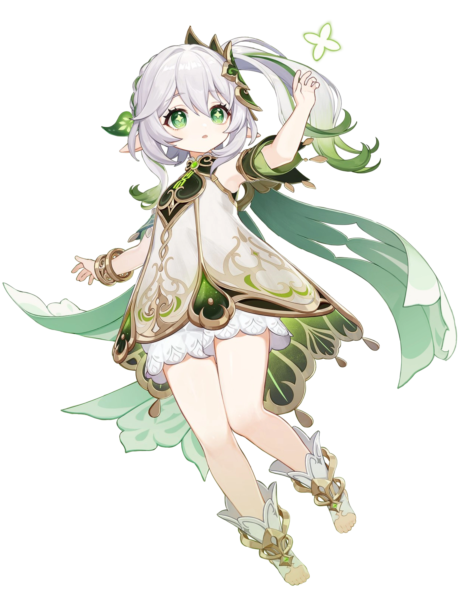

Visão geral
Nahida é uma personagem Dendro jogável em Genshin Impact. Ela é o corpo mortal da Lorde Menor Kusanali, atual Arconte Dendro. Como Lorde Menor Kusanali, ela se esforça para ter uma presença mais forte em Sumeru agora que foi libertada de seu extenso confinamento no Santuário de Surasthana. Sempre adquirindo novos conhecimentos, ela sempre se esforçou para se tornar uma Arconte digna que pudesse guiar o seu povo o mais rápido possível.
